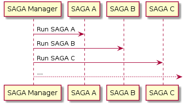

SAGA¶
Context¶
Minos framework apply Database per Service Pattern. Each service has its own database. Some business transactions,
however, span multiple service so we need a mechanism to implement transactions that span services.
For example, let’s imagine that we have an e-commerce store where customers have a credit limit.
The application must ensure that a new order will not exceed the customer’s credit limit. Since Orders and Customers
are in different databases owned by different services the application cannot simply use a local ACID transaction.
Problem¶
How do we implement transactions that affect several services?
In our case, how do we make Order and Customer communicate?
Solution¶
Implement each business transaction that spans multiple services is a saga. A saga is a sequence of local transactions. Each local transaction updates the database and publishes a message or event to trigger the next local transaction in the saga. If a local transaction fails because it violates a business rule then the saga executes a series of compensating transactions that undo the changes that were made by the preceding local transactions.
Example¶
In the following example we are going to see how the saga is for the case of adding a Product to the Cart, we want
this product to be reserved for us.
![@startuml
actor User
box "Microservice Cart" #FFFFF3
participant "add_to_cart()"
participant SAGA
end box
box "Microservice Product" #F3FFF6
participant Product
end box
autonumber
User --> "add_to_cart()": Add item to cart
"add_to_cart()" -> SAGA: Execute
SAGA -> Product: Try to reserve the product
Product --> SAGA: Product reserved
SAGA --> SAGA: Add product to the cart
note left
In the commit method,
add item to cart
end note
SAGA --> "add_to_cart()": Success
"add_to_cart()" --> User: Response
@enduml](../_images/plantuml-689ca07810471c2a57e3de5a82f76bcb935eaf7f.png)
Definitions¶
It is important to differentiate the components involved, which are broadly speaking:
SAGA
It is the definition of the different operations involved in the transaction in an orderly and hierarchical manner. For example, to create an order we must reserve the products (microservice Product), generate the ticket or order summary (microservice Ticket) and make the payment (microservice Payment). So the saga ensures that operations are executed in a set manner, i.e. first the product is reserved, then the ticket is generated and finally the payment is created.
SAGA Manager
On the other hand, the saga manager is in charge of coordinating the execution of the SAGA’s.

SAGA structure¶
The saga consists of steps and are those that define the operations to be performed in an orderly way to communicate with other
services. These steps normally contain the call to the corresponding service (.invoke_participant("CreateOrder")) and
optionally a compensation (.with_compensation("DeleteOrder", delete_order_callback)) in case an error occurs or the
operation cannot be performed by the business logic. It also optionally has a function in charge of
receiving the response from the invoked service (which is used in case the response has to be processed).
For a SAGA instance to be valid, a step, invoke_participant and commit are required. So the minimum structure of
a SAGA is:
Saga()
.step()
.invoke_participant("CreateOrder")
.commit()
step()¶
As mentioned above, the step() is the minimum unit for a saga to work.
The step is used to define an operation and separate it from the rest, so a SAGA is usually a series of steps. Example:
CREATE_ORDER = (
Saga("CreateOrder")
.step()
.invoke_participant("CreateTicket", _create_ticket)
.on_reply("ticket", _process_ticket_entries)
.step()
.invoke_participant("PurchaseProducts", _purchase_products)
.with_compensation("PurchaseProducts", _revert_purchase_products)
.step()
.invoke_participant("CreatePayment", _payment)
.on_reply("payment", _get_payment)
.commit(_create_commit_callback)
)
The step in turn contains the following operations:
invoke_participant(COMMAND, Callback function[Optional])It is responsible for invoking a
Commandnormally located in another microservice.The callback function is optional and is used to prepare data or information to be sent with the
Command.Example:
TicketQuery = ModelType.build("TicketQuery", {"cart_uuid": UUID}) def _create_ticket(context: SagaContext) -> Model: cart_uuid = context["cart_uuid"] return TicketQuery(cart_uuid) CREATE_ORDER = ( Saga("CreateOrder") .step() .invoke_participant("CreateTicket", _create_ticket) .on_reply("ticket", _process_ticket_entries) .commit(_create_commit_callback) ) # The execution of the SAGA is omitted in this example ...
on_reply(Name, Callback function)- Optionalon reply is optional and is used if necessary to handle the result of the
invoke_participant. Important - The callback function of on_reply does not have access to the SagaContext. This is intentional since on_reply is only used to process the data. Onreturnit is automatically stored in SagaContext. Example:def _get_payment(value: Aggregate) -> UUID: return value.uuid CREATE_ORDER = ( Saga("CreateOrder") .step() .invoke_participant("CreatePayment", _payment) .on_reply("payment", _get_payment) .commit(_commit) ) # The execution of the SAGA is omitted in this example ...
with_compensation(COMMAND, Callback function[Optional])- OptionalIn the event of an error in any of the operations, the compensation of the corresponding step and those of the previous steps, if any, will be executed.
The callback function is optional and is used to prepare data or information to be sent with the
Command.
![@startuml
participant "SAGA Manager"
participant "SAGA CreateOrder"
box "Microservice Product" #FFFFF3
participant "PurchaseProducts"
end box
box "Microservice Payment" #F3FFF6
participant "CreatePayment"
end box
autonumber
"SAGA Manager" -> "SAGA CreateOrder": Run
"SAGA CreateOrder" -> "PurchaseProducts": Purchase Products (Step 1)
"PurchaseProducts" --> "SAGA CreateOrder": Products Purchased (Step 1)
"SAGA CreateOrder" ->x "CreatePayment": Create Payment ERROR (Step 2)
"SAGA CreateOrder" -> "PurchaseProducts": Compensation (Step 1)
"SAGA CreateOrder" <-- "PurchaseProducts": Compensation OK (Step 1)
@enduml](../_images/plantuml-e216fd26c5db56c59e8a5bfb604295eaa25f0300.png)
commit()¶
TODO
SagaContext¶
TODO
SAGA Manager¶
Saga manager is in charge of coordinating the execution of the saga or resuming the execution from disk or memory.
Previously we have seen how to define a SAGA, now we are going to see how to execute it.
Saga manager accepts the following parameters:
SAGA Definition: Required
Example:
CREATE_ORDER = ( Saga() .step() .invoke_participant("CreateOrder") .commit() )
pause_on_disk: Optional (defaultFalse)If it is paused on disk (
pause_on_disk=True) it means that it is asynchronous, else if it is not paused on disk (pause_on_disk=False) it means that it is synchronous.raise_on_error: Optional (defaultTrue) Indicates what behaviour the SAGA should take in case of an error, being able to set it toFalseso that in case of error no exception is thrown and other operations can be performed after the SAGA.return_execution: Optional (defaultTrue)If
return_execution=True, the process that launched the SAGA would be waiting until the execution is finished, being able to evaluate the result of this execution. Ifpause_on_disk=False, the process that launched the SAGA receives the UUID of the SAGA execution and does not wait for it to finish.contextOptionalParameters that you want to send to SAGA in order to be able to operate with them. Example:
context=SagaContext( cart_uuid=cart_uuid, customer_uuid=customer_uuid, payment_detail=payment_detail, shipment_detail=shipment_detail, ),
Within the SAGA you can access them in the following way:
def example_function(context: SagaContext) -> SagaContext: customer = context["customer_uuid"]
Now we can see an example on how to run a SAGA with SAGA Manager:
CREATE_ORDER = (
Saga("CreateOrder")
.step()
.invoke_participant("CreateTicket")
.step()
.invoke_participant("CreatePayment")
.commit()
)
...
class OrderCommandService(CommandService):
@enroute.rest.command("/orders", "POST")
@enroute.broker.command("CreateOrder")
async def create_order(self, request: Request) -> Response:
saga = await self.saga_manager.run(
CREATE_ORDER,
context=SagaContext(
cart_uuid=cart_uuid,
customer_uuid=customer_uuid,
payment_detail=payment_detail,
shipment_detail=shipment_detail,
),
)
Query building¶
TODO